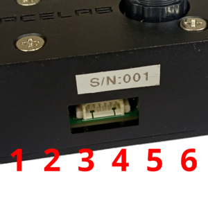
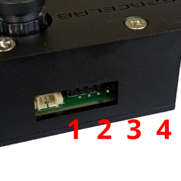
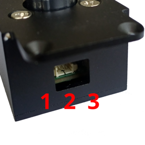
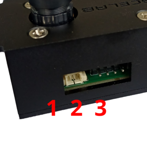
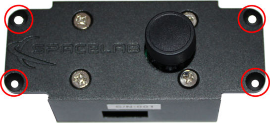
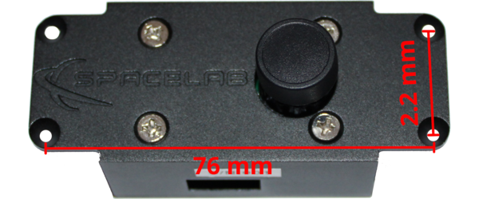

Interfaces
This chapter details the interfaces of the SLCam module, dividing them into three categories: electrical, software, and mechanical interfaces. Each of these categories is described in the following sections.
Electrical
All external electrical interfaces available to the user are listed in Table 4, together with their location, connector type, and pinout.
Connector |
Purpose |
Image |
Interface |
Type |
Pins |
|---|---|---|---|---|---|
J1 |
Control/Data
and power
|
 |
SPI/Power |
PicoBlade |
1=3V3
2=GND
3=MISO
4=MOSI
5=CLK
6=CS
|
J3 |
Programming |
 |
JTAG |
PinHeader |
1=DIO
2=CLK
3=3V3
4=GND
|
J4 |
Control/Data |
 |
CAN |
PicoBlade |
1=GND
2=CAN High
3=CAN Low
|
J5 |
Debug |
 |
UART |
PicoBlade |
1=GND
2=UART_RX
3=UART_TX
|
{kind=link}
{kind=link}
{kind=link}
{kind=link}
Attention
All pins presented in Table 4 operate at CMOS 3V3 voltage level!
Software
Todas as interfaces de software do módulo estão associadas as interfaces elétricas apresentadas na seção anterior. Nas subseções a seguir, os parâmetros de configuração e características de cada interface estão descritas.
Control/Data
The control and data interfaces allow commands to be sent and their respective responses to be received, in addition to enabling data transfer from the module to the host system, such as image transmission.
Two interfaces are available for control and data transfer: the SPI and CAN interfaces. Therefore, both interfaces provide the same functionalities and enable redundant access to the device.
The specifications required to communicate with these interfaces are described in Table 5 and Table 6 (SPI and CAN, respectively).
Parameter |
Value |
|---|---|
PHY |
SPI |
Signal Level |
CMOS 3V3 |
Mode |
0 (CPHA=0/CPOL=0) |
Baudrate |
500 kbps |
Data Link/Network Protocol |
CSP |
Address |
10 |
Parameter |
Value |
|---|---|
PHY |
CAN |
Signal Level |
CMOS 3V3 |
Type |
Standard CAN |
Baudrate |
500 kbps |
Data Link/Network Protocol |
CSP |
Address |
11 |
Both interfaces use the CSP protocol [8] as the data link and network layer protocol. Commands and their respective responses are transmitted within the payload field of each CSP packet (transport layer), following the format descrided in the next section. In all CSP packets, the CRC flag must be enabled.
Commands
To externally control and access the SLCam module, some commands are available through the control/data interfaces of the board. A list with the commands is available in Table 7. The format of the commands’ answers can be seen in Table 8.
ID |
Name |
Content |
Interface |
|---|---|---|---|
0 |
Read Parameter |
Param. ID (1 byte) |
SPI, CAN |
1 |
Write Parameter |
Param. ID (1 byte), Param. Value (8 bytes) |
SPI, CAN |
2 |
Capture Single Image |
None |
SPI, CAN |
3 |
Start Automatic Capture |
None |
SPI, CAN |
4 |
Stop Automatic Capture |
None |
SPI, CAN |
5 |
Read Image |
Image ID (4 bytes) |
SPI, CAN |
6 |
Remove Image |
Image ID (4 bytes) |
SPI, CAN |
ID |
Name |
Content |
|---|---|---|
1 |
TBD |
TBD |
Variables and Parameters
All variables and parameters available for reading and writing are listed in Table 9. Each variable/parameter has a unique ID and can be read by an external device. As shown, some variables can also be written.
ID |
Name |
Description |
Access |
Type |
Length
[bytes]
|
|---|---|---|---|---|---|
0 |
Firmware version |
v1.2.3=0x00010203 |
Read |
uint16 |
2 |
1 |
Hardware version |
v1.2.3=0x00010203 |
Read |
uint16 |
2 |
2 |
System Time |
Epoch in seconds |
Read/Write |
uint32 |
4 |
3 |
Reset Counter |
Resets since factory reset |
Read |
uint32 |
4 |
4 |
Operation Mode |
TBD |
Read/Write |
uint8 |
1 |
5 |
Number of Available
Images
|
Images in memory |
Read |
uint16 |
2 |
6 |
Image Size |
0=160x120,
1=176x144,
2=320x240,
3=352x288,
4=640x480,
5=800x600,
6=1024x768,
7=1280x1024,
8=1600x1200
|
Read/Write |
uint8 |
1 |
7 |
Light Mode |
0=Auto,
1=Sunny,
2=Cloudy,
3=Office,
4=Home
|
Read/Write |
uint8 |
1 |
8 |
Color Saturation |
0=Saturation 0,
1=Saturation 1,
2=Saturation 2
|
Read/Write |
uint8 |
1 |
9 |
Brightness |
0=Brightness 0,
1=Brightness 1,
2=Brightness 2
|
Read/Write |
uint8 |
1 |
10 |
Contrast |
0=Contrast 0,
1=Contrast 1,
2=Contrast 2
|
Read/Write |
uint8 |
1 |
11 |
Special Effect |
0=Antique,
1=Bluish,
2=Greenish,
3=Reddish,
4=Black and White,
5=Negative,
6=Negative Black and White,
7=Normal
|
Read/Write |
uint8 |
1 |
Debug
The debug interface consists of a serial port where system log messages are written and configuration and operation commands can be sent, both through a command-line terminal interface. The communication specifications of this interface are described in Table 10.
Parameter |
Value |
|---|---|
PHY |
UART |
Signal Level |
CMOS 3V3 |
Baudrate |
115200 bps |
Data Bits |
8 |
Stop Bits |
1 |
Parity |
None |
Flow Control |
XON/XOFF |
An example of the output of this interface when the SLCam is connected to a computer and powered on can be seen in Fig. 14.

Fig. 14 Debug interface output example.
Programming
To upload the firmware to the module, the programming interface must be used. This interface provides a JTAG port, where an ST-Link programmer must be connected for code uploading.
Mechanical
The SLCam module provides two main external mechanical interfaces: the mounting structure and the optical interface of the camera lens. These interfaces are responsible for enabling the mechanical integration of the payload into the satellite structure while also providing the required optical access for image acquisition.
For structural integration, the module includes four 3.2 mm diameter through holes designed for the use of standard M3 screws. These mounting holes allow the SLCam to be securely attached to the satellite structure or to external support fixtures during integration and testing activities. The location of the mounting holes on the mechanical case is illustrated in Fig. 15.
{kind=link}

Fig. 15 Mounting holes of the SLCam case.
The relative spacing and distances between the mounting holes are presented in Fig. 16. These dimensions are important for the mechanical integration of the payload and must be considered during the design of the satellite support structure and assembly interfaces.
{kind=link}

Fig. 16 Distance between the mounting holes.